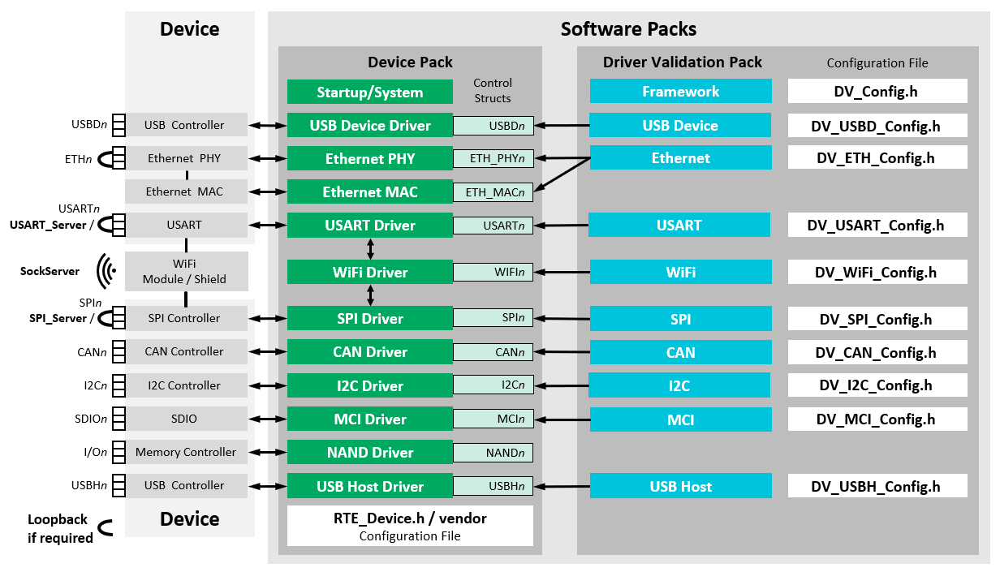

This manual explains the scope and the usage of the CMSIS-Driver Validation framework. This is a test suite that helps developers to verify that an implementation of a peripheral driver is compliant with the corresponding CMSIS-Driver Specification. Verified drivers can then be reliably used with middleware components and user applications that rely on CMSIS-Driver APIs.
The CMSIS-Driver Validation is maintained in a public GitHub repository. Its releases in CMSIS Pack format are also available on CMSIS Packs page under Arm - CMSIS Driver Validation category and can be used in environments supporting the CMSIS-Pack concept.
The CMSIS-Driver Validation framework provides:
- Configurable validation tests for various CMSIS-Driver interfaces
- Example projects that show the usage of the CMSIS-Driver Validation
- Various Servers used for testing
The CMSIS-Driver Validation tests and verifies:
- API interface using the driver capabilities as well as valid and invalid parameters
- Data communication with various transfer sizes and communication parameters:
- Loopback testing (for some interfaces) for testing of the underlying hardware with usage of a local loopback
- Server testing (for some interfaces) for extensive testing of the underlying hardware with usage of a dedicated Server
- Transfer speed of the data communication with time measurement of data transfer duration
- Event signaling
The CMSIS-Driver Validation requires CMSIS-RTOS2 functionality and can be used to verify the setup and configuration of the CMSIS-Driver interfaces in a user system.
The diagram below shows an overview of the CMSIS-Driver Validation configuration.

The CMSIS-Driver Validation provides validation for the following interfaces:
- CAN - Controller Area Network (CAN) interface driver.
- Ethernet - Ethernet MAC and PHY peripheral interface driver.
- GPIO - General Purpose Input-Output interface driver.
- I2C - Inter-Integrated Circuit (I2C) multi-master serial single-ended bus interface driver.
- MCI - Memory Card Interface driver for SD/MMC memory.
- SPI - Serial Peripheral Interface (SPI) driver.
- USART - Universal Synchronous and Asynchronous Receiver/Transmitter (USART) interface driver.
- USB Device - Universal Serial Bus (USB) Device interface driver.
- USB Host - Universal Serial Bus (USB) Host interface driver.
- WiFi - WiFi (Wireless Fidelity Interface) module/shield driver.
- Note
- Extensive testing using dedicated Server is available for SPI, USART and WiFi drivers.
This manual assumes that you are familiar with MDK. Refer to MDK Version 5 - Getting Started for additional information.
Document structure
This manual contains the following chapters:
- Revision History - Contains revision history information.
- Setup - Describes the general setup of the CMSIS-Driver Validation test and how to generate test report.
- Report - Describes the reports produced by the CMSIS-Driver Validation.
- Debugging - Describes procedure for debugging of the interface drivers using the CMSIS-Driver Validation.
- Resource Requirements - Lists memory and CMSIS-RTOS2 requirements.
- Examples - Contains information about several example projects.
- Reference - Explains the configuration and tests for the various CMSIS-Driver interfaces.
License
The CMSIS Driver example implementations are provided free of charge under Apache 2.0 license. See the Apache 2.0 License.